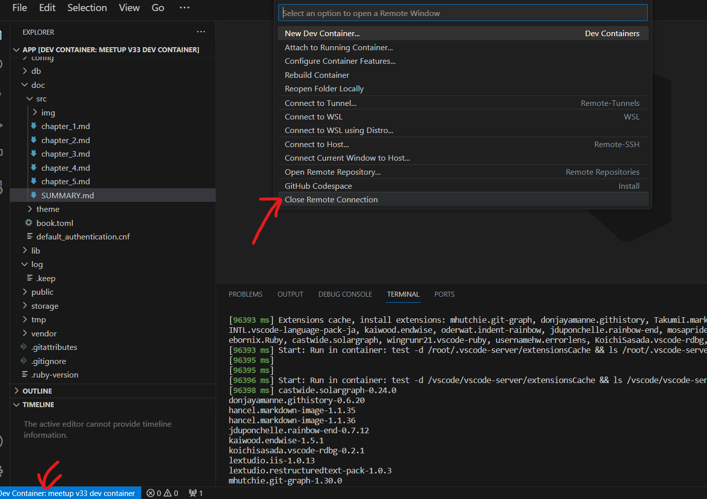

4. DB のバージョンアップ
4.1 別バージョンの DB を起動
Docker で環境構築するメリットとして、ミドルウェアのバージョンアップを容易に実施することが出来ることが挙げられます。
ローカル環境に直接 PostgreSQL がインストールされている場合は、単純に pg_upgrade すれば良い場面もあるかもしれませんが、 例えば、案件 A：ver13、案件 B：ver13 の状態で案件 A だけ 15 にアップデートしたい！ という状況だといかがでしょう？
PC を複数台用意する訳にも行かず困ってしまいますよね？
現在 PostgreSQL13 で当システムは起動しているので、15 にアップデートしてみましょう。
seed を取得
バージョン 13 のコンテナからデータを取得します。 以下を VSCode ターミナルより実行します。
bundle exec rails db:seed:dump MODELS=users
その後データベースコンテナの削除を行います。 こちらはコマンドプロンプト等、VSCode 以外の DevContainer の外から実施します。
# 以下で立ち上がっているコンテナを確認しNameがv33_dbのIDを控えておきましょう
docker container ls -a
# 控えておいたIDに置き換えてコンテナを削除します
docker container rm -f [コンテナID]
ボリュームも同様に削除します。
# 同様に作成済みのボリュームを確認し、Nameを控えておきます
docker volume ls
# 控えておいたNameに置き換えます（おそらく以下のような名前になっている想定です）
docker volume rm -f mirameetvol33-main_v33-volume
バージョンをアップデート
・docker-compose.yml
v33_db:
container_name: v33_db
- image: postgres:13-alpine
+ image: postgres:15-alpine
ports:
- "5433:5432"
volumes:
- v33-volume:/var/lib/postgresql/data
environment:
- TZ=Asia/Tokyo
- POSTGRES_USER=v33
- POSTGRES_PASSWORD=meetupv33
Dev Container の接続を一度閉じて、再度接続します。 

マイグレーション
VSCode で一度 DB を作成し、マイグレーションを実施します
rails db:create
rails db:migrate
バックアップしておいた seed データを投入して復元完了です
rails db:seed
データの復元に成功していれば、前ページの手順で作成したユーザーが再度見れるようになっているはずです！
また登録も問題なく出来るはずですのでサーバーをデバッグ起動し確認してみましょう！
http://localhost:3001/users/
以上で DB のバージョンアップは完了となります。
補足：本番稼働中システムに対する DB バージョンアップについて
当手順はあくまでローカル開発環境向けの手順となります。
本番稼働中のシステムにおいてはデータを損なわないように 入念な計画の元、専用の移行ツール開発等が必須となりますのでご注意ください。